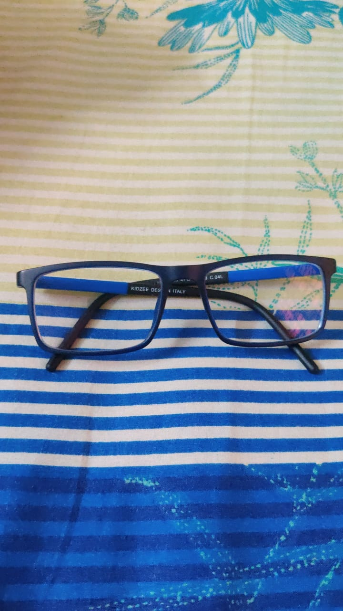
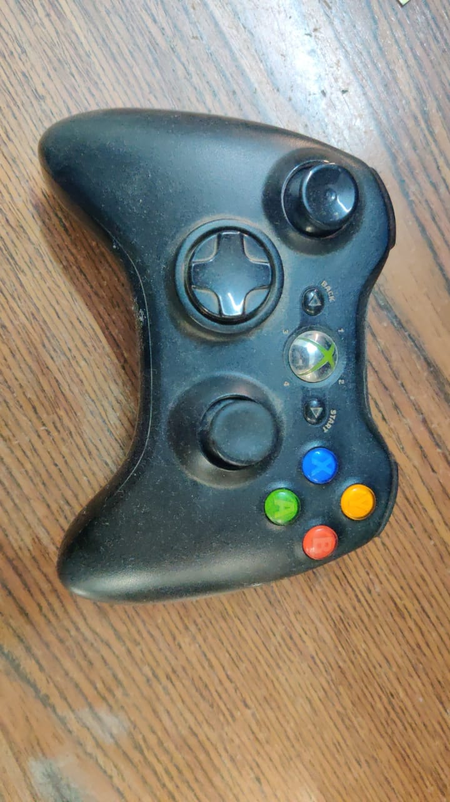
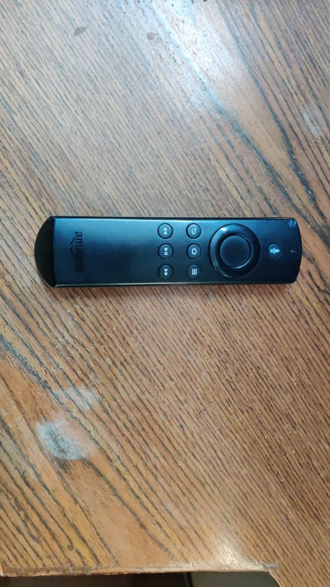
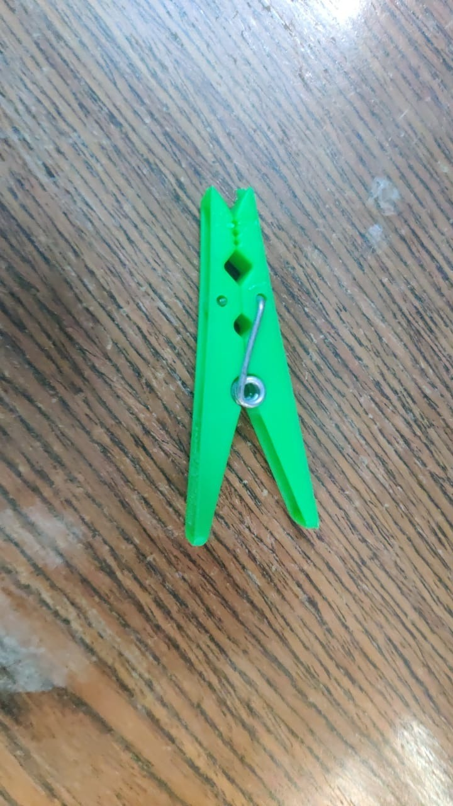
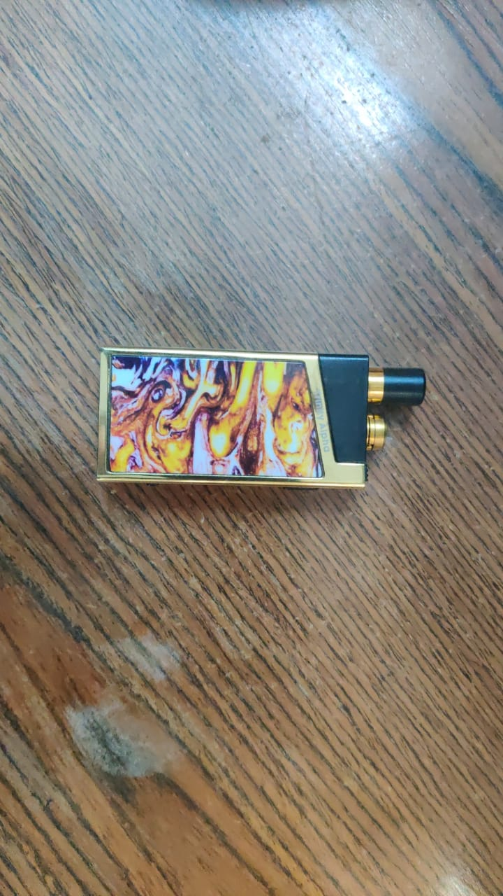
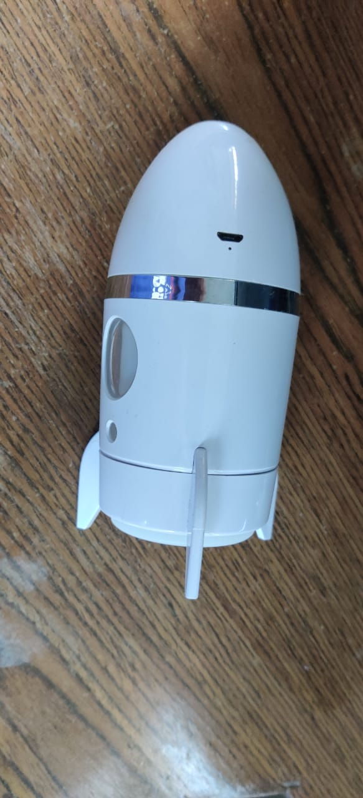
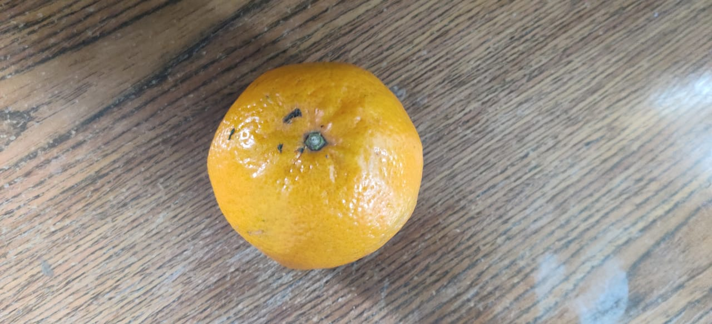
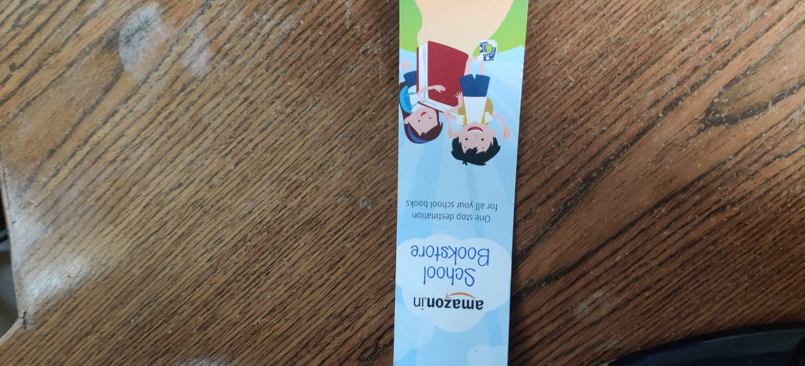
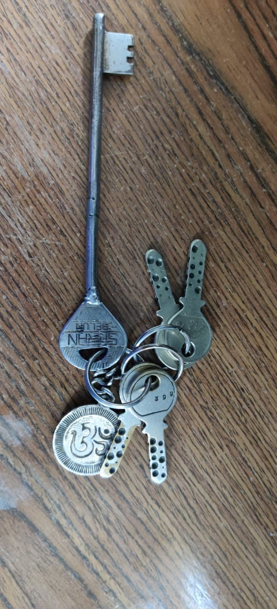
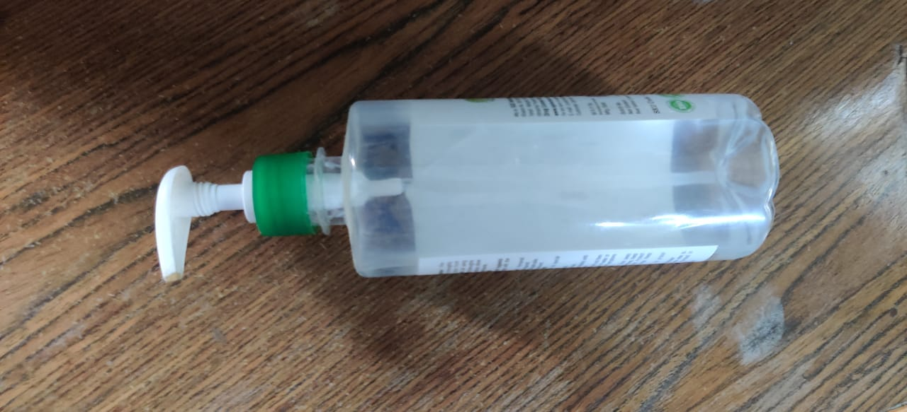

CaseStudy
Image name: Spectacles

Output on Wolfram Project:
eyeglasses
Output on MobileNet Model:
Mousetrap
Result-
Wolfram is more accurate
Image name: Controller

Output on Wolfram Project:
joystick
Output on MobileNet Model:
knee pad
Result-
None of them are correct but wolfram is more accurate
Image name: Remote

Output on Wolfram Project:
ballpoint pen
Output on MobileNet Model:
modem
Result-
None of them are correct but mobilenet is more accurate
Image name: Clip

Output on Wolfram Project:
pin
Output on MobileNet Model:
iron
Result-
none of them are correct but wolfram is more accurate
Image name: Vape

Output on Wolfram Project:
pencil
Output on MobileNet Model:
bob
Result-
none of them are correct yet none accurate
Image name: Rocket

Output on Wolfram Project:
switch
Output on MobileNet Model:
cocktail shaker
Result-
none are correct but wolfram is more accurate
Image name: Orange

Output on Wolfram Project:
citrons
Output on MobileNet Model:
balloon
Result-
none correct but wolfram more accurate
Image name: Bookmark

Output on Wolfram Project:
instrument
Output on MobileNet Model:
lotion
Result-
none correct yet none accurate
Image name: Keys

Output on Wolfram Project:
fastener
Output on MobileNet Model:
padlock
Result-
non correct but mobilenet more accurate
Image name: Sanitizer

Output on Wolfram Project:
ethernet cable
Output on MobileNet Model:
soap dispenser
Result-
none correct but mobilenet more accurate
I have uploaded 10 images
Wolfram got 5 correct
Mobilenet got 3 correct
2 both did not guess correct
Therefore wolfram is more accurate